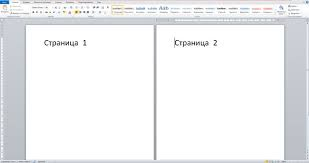

Сайт с двумя и более страницами
Сайт с двумя и более страницами это когда на
одном сайте может быть переключатель между
сайтами. Когда пользователь ннажимает на
стелку, то он переходит между сатами
Внимание!
Сайт с двумя и более страницами это
отдельные сайты, а не дополнение!
